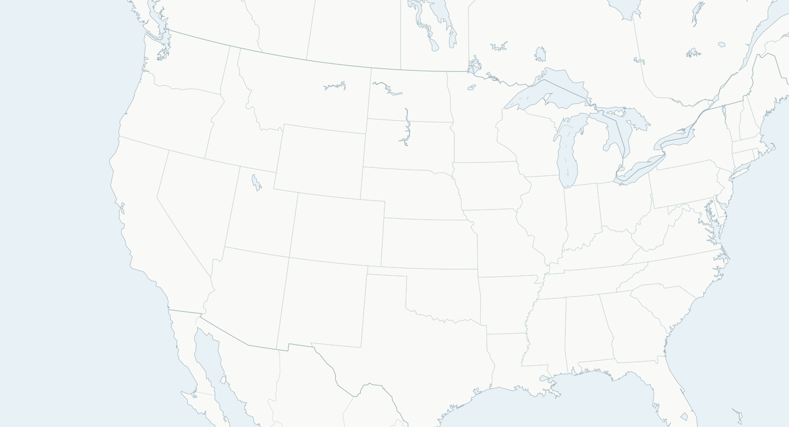

Sample data is used instead of real print data

Connect your own Google Maps Platform key to enable satellite imagery and 3D flyovers. The map remains editable without a key.
Enable Maps JavaScript API and billing, then restrict this key to your website and that API. A key entered here is used for this browser session only.